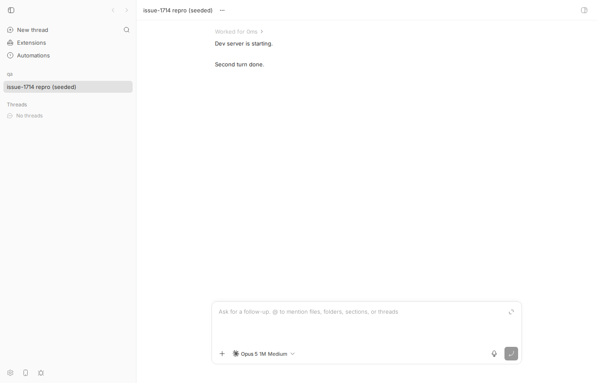
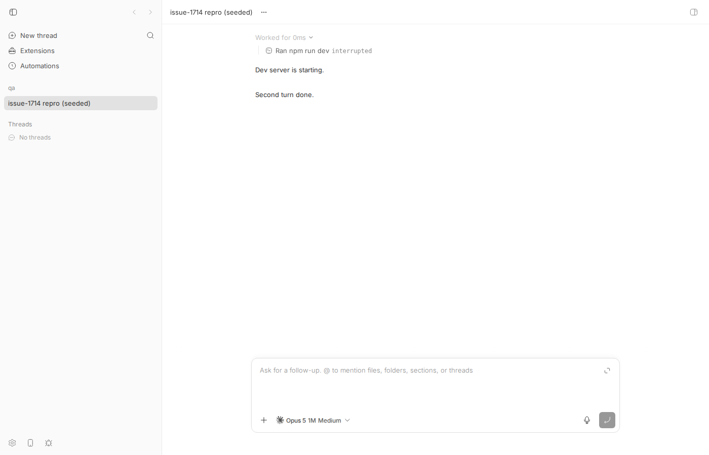
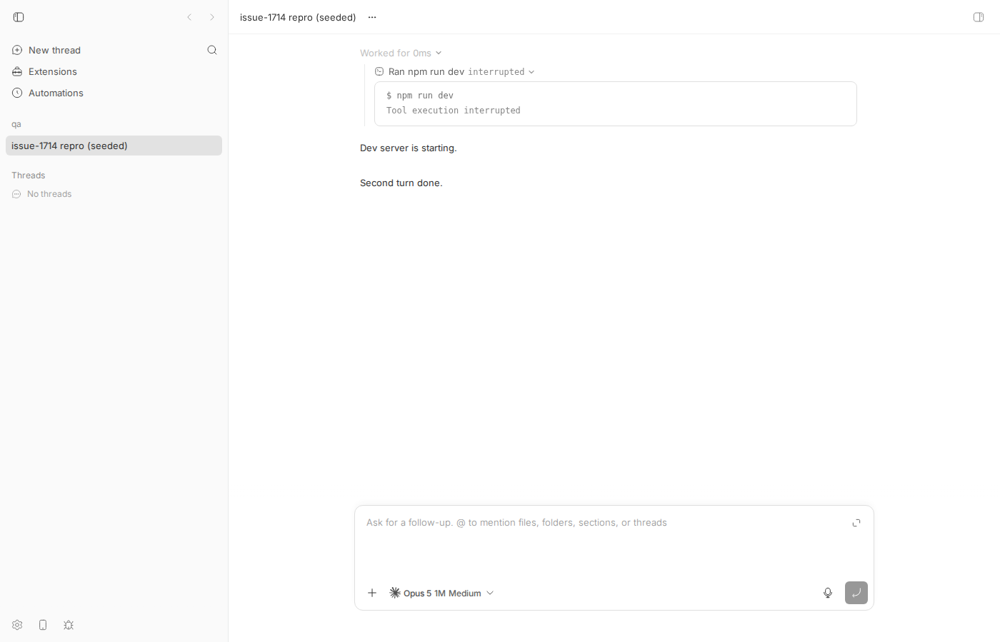
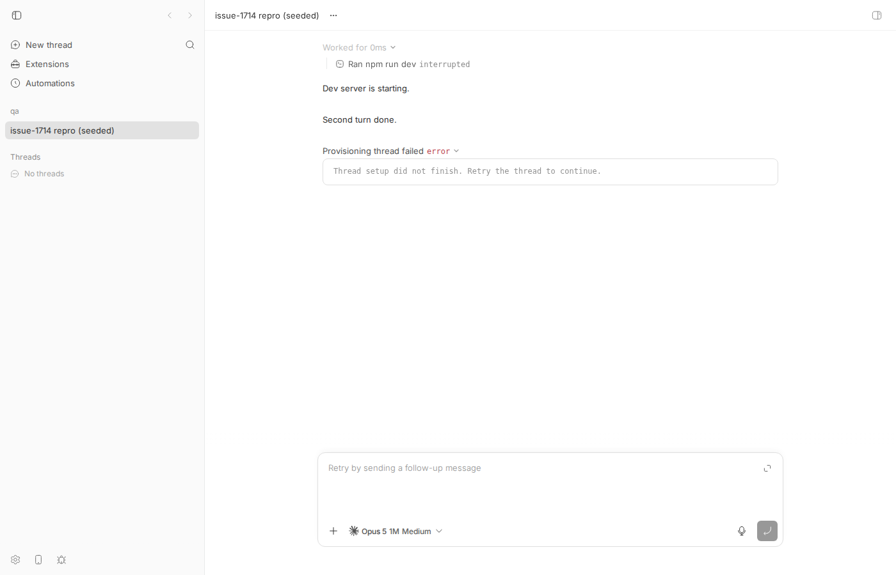

#1714 · A tool call that completes in a later turn shows as pending in its spawning turn's details
TL;DR
Plain-language framing. A bb thread's history is a list of persisted events. Each event is tagged with the turn it belongs to (a turn is one "user asks, agent works, agent answers" cycle). Tool calls (a shell command, a file edit) are items: an item/started event and, later, an item/completed event with the same item id. Normally both events are tagged with the same turn. But a tool can outlive its turn: the agent answers, the turn ends, a new turn starts, and only then does the tool's result arrive. The Claude Code translator tags that late item/completed with whichever turn is currently open (turn-2), and since it has forgotten the tool by then, it emits it as a generic toolCall. The main timeline builder was taught (PR #447) to merge such a lifecycle by bare item id, so the collapsed turn-1 row spans seq 1–6 and its inline children show the command as completed with its output.
The app never renders those inline children. When you click a finished turn ("Worked for …") it calls a separate turn-summary-details route with the row's turnId and sequence range. That route re-reads the events in the range and then drops every turn-scoped row whose turn id differs from the requested one (a deliberate fix from #164 for overlapping turns), which throws away the turn-2 completion. The whole-item closure added in #1510 cannot rescue it because it keys items by scopeKind+turnId+itemId, so turn-1/call-1 and turn-2/call-1 are different items, and its backfill only looks backwards. The re-projection therefore holds an item/started with no end and the row renders as unfinished. Because the response is a normal 200, nothing errors or logs.
I reproduced this three ways on 16ceb3a54: (1) a vitest asserting details.rows equals the row's inline children, which fails; (2) the real HTTP routes on my dev instance, where GET …/timeline?includeNestedRows=true returns completed/"dev server exited with code 0" and GET …/timeline/turn-summary-details?turnId=turn-1&sourceSeqStart=1&sourceSeqEnd=6 returns the same row id as interrupted/"Tool execution interrupted"; (3) the app UI, where expanding the turn shows "Ran npm run dev interrupted", while bb thread log --format verbose on the same thread prints the completed command with its output. One correction to the issue: on a real idle thread the wrong row reads interrupted, not pending (the projection interrupts pending calls once the thread is not active); the issue's pending comes from its test thread being in the default starting status. Same defect, arguably worse wording. A 20-line prototype fix in the details filter (keep another turn's item/* rows for item ids the requested turn started, unless the id was restarted in between) makes the invariant test pass and leaves the other 115 server thread tests green.
Claims vs findings
| Claim | Status | Evidence |
|---|---|---|
Turn row's inline children render the item completed with output while the details route renders the same row id unfinished | Verified | Regression test diff below (status completed→pending, output→"", sourceSeqEnd 6→2, completedAt→null); same via HTTP on the dev instance. |
Details row is status: "pending" | Verified only for a starting/active thread | Unit test (thread created by createThread defaults to starting, threads.ts#L311) shows pending. On the real idle thread the route and the app show interrupted / "Tool execution interrupted" because finalizePendingMessages interrupts pending calls when the thread is not active (event-projection-state.ts#L176-L192, tool-activity-projection.ts#L681-L693). The divergence is the same. |
| Response is a silent 200, no error/log | Verified | curl to the route returned 200 with rows; nothing in dev.log. The exact-bounds matcher still matches because resolveTurnSummaryDetailsSourceRange shrinks the range in lockstep with the completion-less re-projection. |
Turn-1 row spans [1,6], past its own turn/completed at 4 | Verified | Test log: TURN ROW {"turnId":"turn-1","sourceSeqStart":1,"sourceSeqEnd":6}; API timeline row identical. |
onExecEnd/upsertRunningExecCall merge cross-turn by bare call id, keeping the first scope (#447) | Verified | tool-activity-projection.ts#L1075-L1095, tool-activity-projection.ts#L497-L550; git log -S"outlive its spawning turn" → 5b5e7dcee (#447). |
filterExactEventRowsForRequestedTurn drops other-turn rows (#164 fix) | Verified | timeline.ts#L629-L654. Introduced by 6217768bb "Optimize timeline feed pipeline (#135)"; hardened later. Prototype fix relaxing exactly this filter cures the symptom. |
ensureSequenceWindowWholeItemRows keys by scoped identity and only backfills rows below the window start | Verified | timeline.ts#L838-L940 (scopedItemRefKey at events.ts#L1452-L1454; backfill filter row.sequence < args.sequenceStart at timeline.ts#L914). |
Claude Code translator scopes a late tool_result to the open turn and degrades it to toolCall/unknown after toolItemsByCallId is cleared | Verified (path differs from the issue) | event-translation.ts#L1325-L1351 uses state.currentTurnId; clearTransientTurnState clears the map at turn-state.ts#L129-L133; fallback tool: args.toolName ?? "unknown" at tool-item-translation.ts#L253-L261. The issue's path packages/agent-runtime/src/shared/tool-item-translation.ts does not exist at base. |
| Item kind / accepted input / assistant message make no difference | Not re-checked | Mechanism is kind-agnostic (filter is on scopeKind/turnId), so plausible; I only ran the base fixture. |
| In the app, expansion is the only place a finished turn's work rows are readable | Verified | No includeNestedRows use in apps/app/src; only bb thread log --format verbose (show.ts#L471-L474) requests nested rows. Screenshots below. |
| Historical rows are the main carriers; new claude-code occurrences rare since #633 | Unverified | I did not provoke a real late tool_result from a live provider (would need a tool to finish after the turn's result). Repro seeds the persisted shape directly. |
Environment
- bb
16ceb3a54(main, 2026-08-18); re-checked on origin/maina108fa7ef(bug still present). Worktree/home/sawyer/projects/bb/.claude/worktrees/wf_242c3e11-a10-35. - Linux 7.0.0-29-generic, node v24.18.0, pnpm 9.15.0, vitest 4.1.1.
- Dev instance: app
:17600, server:25600, host daemon:33600, data dir/home/sawyer/.bb-dev/projects-bb-.claude-worktrees-wf_242c3e11-a10-35-2d6d9e086b6f. Projectproj_zw32hwfcnb(local path/tmp/bb-1714-qa), seeded threadthr_babit2hcwx. - No provider process was needed: the persisted event shape is seeded directly (unit test via in-memory SQLite; dev instance via
@bb/dbagainst itsbb.db).
Minimal reproduction
A. Unit-level (fails on 16ceb3a54 and on a108fa7ef)
- Copy 1714/repro/timeline-cross-turn-item-details.regression.test.ts to
apps/server/test/services/threads/. - From
apps/server:pnpm exec vitest run test/services/threads/timeline-cross-turn-item-details.regression.test.ts
Expected: the details rows for turn-1 equal the turn-1 row's inline children (one command row, completed, output dev server exited with code 0). Actual (full log):
RUN v4.1.1 /home/sawyer/projects/bb/.claude/worktrees/wf_242c3e11-a10-35/apps/server
stdout | test/services/threads/timeline-cross-turn-item-details.regression.test.ts > turn-1 details rows equal turn-1 inline children when call-1 completes in turn-2 (#1714)
TURN ROW {"turnId":"turn-1","sourceSeqStart":1,"sourceSeqEnd":6}
INLINE CHILDREN [
{
"id": "thr_qtkpu9pmbp:command:call-1",
"threadId": "thr_qtkpu9pmbp",
"turnId": "turn-1",
"sourceSeqStart": 2,
"sourceSeqEnd": 6,
"startedAt": 1787039650423,
"createdAt": 1787039650423,
"kind": "work",
"workKind": "command",
"status": "completed",
"callId": "call-1",
"command": "npm run dev",
"cwd": "/tmp/test",
"source": null,
"output": "dev server exited with code 0",
"exitCode": null,
"completedAt": 1787039650423,
"approvalStatus": null,
"activityIntents": []
}
]
DETAILS ROWS [
{
"id": "thr_qtkpu9pmbp:command:call-1",
"threadId": "thr_qtkpu9pmbp",
"turnId": "turn-1",
"sourceSeqStart": 2,
"sourceSeqEnd": 2,
"startedAt": 1787039650423,
"createdAt": 1787039650423,
"kind": "work",
"workKind": "command",
"status": "pending",
"callId": "call-1",
"command": "npm run dev",
"cwd": "/tmp/test",
"source": null,
"output": "",
"exitCode": null,
"completedAt": null,
"approvalStatus": null,
"activityIntents": []
}
]
❯ @bb/server test/services/threads/timeline-cross-turn-item-details.regression.test.ts (1 test | 1 failed) 133ms
× turn-1 details rows equal turn-1 inline children when call-1 completes in turn-2 (#1714) 133ms
⎯⎯⎯⎯⎯⎯⎯ Failed Tests 1 ⎯⎯⎯⎯⎯⎯⎯
FAIL @bb/server test/services/threads/timeline-cross-turn-item-details.regression.test.ts > turn-1 details rows equal turn-1 inline children when call-1 completes in turn-2 (#1714)
AssertionError: expected [ { …(19) } ] to deeply equal [ { …(19) } ]
- Expected
+ Received
@@ -2,22 +2,22 @@
{
"activityIntents": [],
"approvalStatus": null,
"callId": "call-1",
"command": "npm run dev",
- "completedAt": 1787039650423,
+ "completedAt": null,
"createdAt": 1787039650423,
"cwd": "/tmp/test",
"exitCode": null,
"id": "thr_qtkpu9pmbp:command:call-1",
"kind": "work",
- "output": "dev server exited with code 0",
+ "output": "",
"source": null,
- "sourceSeqEnd": 6,
+ "sourceSeqEnd": 2,
"sourceSeqStart": 2,
"startedAt": 1787039650423,
- "status": "completed",
+ "status": "pending",
"threadId": "thr_qtkpu9pmbp",
"turnId": "turn-1",
"workKind": "command",
},
]
❯ test/services/threads/timeline-cross-turn-item-details.regression.test.ts:90:24
88| console.log("INLINE CHILDREN", JSON.stringify(inlineChildren, null, …
89| console.log("DETAILS ROWS", JSON.stringify(details.rows, null, 2));
90| expect(details.rows).toEqual(inlineChildren);
| ^
91| });
92|
⎯⎯⎯⎯⎯⎯⎯⎯⎯⎯⎯⎯⎯⎯⎯⎯⎯⎯⎯⎯⎯⎯⎯⎯[1/1]⎯
Test Files 1 failed (1)
Tests 1 failed (1)
Start at 07:54:09
Duration 1.35s (transform 610ms, setup 0ms, import 1.13s, tests 133ms, environment 0ms)
The test file:
/**
* Regression test for get-bb/bb#1714: the invariant that a turn summary
* row's details (buildTimelineTurnSummaryDetails over the row's own
* turnId/sourceSeqStart/sourceSeqEnd) equal that row's inline `children`.
*
* FAILS on 16ceb3a54 (bug present): details work row is `pending` with
* empty output while the inline child is `completed` with output.
*/
import { expect, it } from "vitest";
import { turnScope } from "@bb/domain";
import type { Thread } from "@bb/domain";
import {
createConnection,
createProject,
createThread,
insertEvents,
migrate,
noopNotifier,
upsertHost,
} from "@bb/db";
import type { DbConnection } from "@bb/db";
import type { TimelineRow } from "@bb/server-contract";
import {
buildThreadTimelineWithProfile,
buildTimelineTurnSummaryDetails,
} from "../../../src/services/threads/timeline.js";
const providerThreadId = "provider-root";
function setup(): { db: DbConnection; thread: Thread } {
const db = createConnection(":memory:");
migrate(db);
const host = upsertHost(db, noopNotifier, { name: "test-host", type: "persistent" });
const { project } = createProject(db, noopNotifier, {
name: "test-project",
source: { type: "local_path", hostId: host.id, path: "/tmp/test" },
});
const thread = createThread(db, noopNotifier, { projectId: project.id, providerId: "claude-code" });
return { db, thread };
}
type EventInput = Parameters<typeof insertEvents>[2][number];
function seed(db: DbConnection, thread: Thread) {
const events: EventInput[] = [];
let sequence = 0;
const push = (event: Omit<EventInput, "sequence" | "threadId">): void => {
sequence += 1;
events.push({ ...event, sequence, threadId: thread.id });
};
push({ type: "turn/started", scope: turnScope("turn-1"), providerThreadId, itemId: null, itemKind: null, data: JSON.stringify({}) });
push({ type: "item/started", scope: turnScope("turn-1"), providerThreadId, itemId: "call-1", itemKind: "commandExecution",
data: JSON.stringify({ item: { type: "commandExecution", id: "call-1", command: "npm run dev", cwd: "/tmp/test", status: "pending", approvalStatus: null } }) });
push({ type: "item/completed", scope: turnScope("turn-1"), providerThreadId, itemId: "msg-1", itemKind: "agentMessage",
data: JSON.stringify({ item: { type: "agentMessage", id: "msg-1", text: "Dev server is starting." } }) });
push({ type: "turn/completed", scope: turnScope("turn-1"), providerThreadId, itemId: null, itemKind: null, data: JSON.stringify({ status: "completed", providerThreadId }) });
push({ type: "turn/started", scope: turnScope("turn-2"), providerThreadId, itemId: null, itemKind: null, data: JSON.stringify({}) });
// Late completion for call-1, scoped to turn-2 (the shape #447 made the projection support).
push({ type: "item/completed", scope: turnScope("turn-2"), providerThreadId, itemId: "call-1", itemKind: "toolCall",
data: JSON.stringify({ item: { type: "toolCall", id: "call-1", tool: "unknown", status: "completed", result: "dev server exited with code 0" } }) });
push({ type: "turn/completed", scope: turnScope("turn-2"), providerThreadId, itemId: null, itemKind: null, data: JSON.stringify({ status: "completed", providerThreadId }) });
insertEvents(db, noopNotifier, events);
}
it("turn-1 details rows equal turn-1 inline children when call-1 completes in turn-2 (#1714)", () => {
const { db, thread } = setup();
seed(db, thread);
const build = (includeNestedRows: boolean): TimelineRow[] =>
buildThreadTimelineWithProfile(db, thread, {
eventBudget: 1_000_000,
includeProviderUnhandledOperations: false,
includeNestedRows,
maxInlineOutputChars: 32_000,
maxSeq: 0,
page: { kind: "latest", segmentLimit: 20 },
}).response.rows;
const isTurn1 = (row: TimelineRow): row is Extract<TimelineRow, { kind: "turn" }> =>
row.kind === "turn" && row.turnId === "turn-1";
const turnRow = build(false).find(isTurn1)!;
const inlineChildren = build(true).find(isTurn1)!.children ?? [];
const details = buildTimelineTurnSummaryDetails(db, thread, {
includeProviderUnhandledOperations: false,
turnId: turnRow.turnId,
sourceSeqStart: turnRow.sourceSeqStart,
sourceSeqEnd: turnRow.sourceSeqEnd,
});
console.log("TURN ROW", JSON.stringify({ turnId: turnRow.turnId, sourceSeqStart: turnRow.sourceSeqStart, sourceSeqEnd: turnRow.sourceSeqEnd }));
console.log("INLINE CHILDREN", JSON.stringify(inlineChildren, null, 2));
console.log("DETAILS ROWS", JSON.stringify(details.rows, null, 2));
expect(details.rows).toEqual(inlineChildren);
});
The issue's own test file (1714/repro/timeline-cross-turn-item-details.test.ts) documents the wrong behavior and therefore passes on base (log): Tests 2 passed (2). Its control (same completion scoped to turn-1) confirms the completion row's turn scope is the causal variable.
B. Real routes and UI on a dev instance
scripts/bb-dev-app current; note Server/App URLs and Data dir. Create a project (see Appendix) and note its id.- Seed the seven-event shape into that instance's DB (creates a claude-code thread and prints its id): 1714/repro/seed-1714-dev-db.mts copied to
apps/server/test/services/threads/, then fromapps/server:BB_DB=<Data dir>/bb.db BB_PROJECT_ID=<proj id> pnpm exec tsx test/services/threads/seed-1714-dev-db.mts thr_babit2hcwx
The server notices the newstartingthread and appends a "Provisioning thread failed" system row and marks iterror; to mimic a normally finished thread I ransqlite3 <Data dir>/bb.db "DELETE FROM events WHERE thread_id='thr_babit2hcwx' AND sequence=9; UPDATE threads SET status='idle' WHERE id='thr_babit2hcwx';". (Before that step the details row already readinterrupted; see api-turn-summary-details.json.) - Inline children (what the projection believes; raw):
$ curl -s "$BB_SERVER_URL/api/v1/threads/thr_babit2hcwx/timeline?includeNestedRows=true" # turn-1 row + children { "turnRow": { "id": "thr_babit2hcwx:turn-1:turn", "turnId": "turn-1", "sourceSeqStart": 1, "sourceSeqEnd": 6, "status": "completed" }, "children": [ { "id": "thr_babit2hcwx:command:call-1", "threadId": "thr_babit2hcwx", "turnId": "turn-1", "sourceSeqStart": 2, "sourceSeqEnd": 6, "startedAt": 1787039807869, "createdAt": 1787039807870, "kind": "work", "workKind": "command", "status": "completed", "callId": "call-1", "command": "npm run dev", "cwd": "/tmp/bb-1714-qa", "source": null, "output": "dev server exited with code 0", "exitCode": null, "completedAt": 1787039807870, "approvalStatus": null, "activityIntents": [] } ] } - Details route with the row's own identity (what the app fetches on expansion; raw):
$ curl -s "$BB_SERVER_URL/api/v1/threads/thr_babit2hcwx/timeline/turn-summary-details?turnId=turn-1&sourceSeqStart=1&sourceSeqEnd=6" { "rows": [ { "id": "thr_babit2hcwx:command:call-1", "threadId": "thr_babit2hcwx", "turnId": "turn-1", "sourceSeqStart": 2, "sourceSeqEnd": 2, "startedAt": 1787039807869, "createdAt": 1787039807869, "kind": "work", "workKind": "command", "status": "interrupted", "callId": "call-1", "command": "npm run dev", "cwd": "/tmp/bb-1714-qa", "source": null, "output": "Tool execution interrupted", "exitCode": null, "completedAt": null, "approvalStatus": null, "activityIntents": [] } ] }Same row idthr_babit2hcwx:command:call-1;sourceSeqEndis pinned to theitem/startedrow (2), statusinterrupted, output is the synthetic "Tool execution interrupted",completedAt: null. HTTP 200. - CLI, which uses inline children (raw):
$ pnpm bb:dev thread log thr_babit2hcwx --format verbose ── Worked for (0ms) ──────────────────────────────────────── ── Ran npm run dev $ npm run dev dev server exited with code 0 ── Assistant ─────────────────────────────────────────────── Dev server is starting. ── Assistant ─────────────────────────────────────────────── Second turn done.

thr_babit2hcwx before expansion. The collapsed turn-1 row is "Worked for 0ms" (top). Nothing about the command is visible yet.
status: "completed" with a result.

idle (thread in error after the provisioning failure): identical wrong row.Root cause
Two ownership models. The projection that builds the timeline (and the inline children) attaches an item to the turn it started in, keyed by bare call id: onExecEnd looks the running call up in thread-level runningCallsById (tool-activity-projection.ts#L1075-L1095) and upsertRunningExecCall keeps the first scope while merging terminal state, output and stretching sourceSeqEnd (tool-activity-projection.ts#L497-L550):
// keep first: provider background work can outlive its spawning turn, and a // late terminal event for the same call id may arrive scoped to a later turn. // Preserve the original placement while still merging terminal state/output. mergeRunningExecutionMetadata(existing, incoming); mergeExecutionCompletion(existing, incoming); … existing.sourceSeqEnd = Math.max(existing.sourceSeqEnd, meta.seq);
The turn draft's bounds stretch over its members' ends (group-event-projection-turns.ts#L115-L157), so the turn-1 summary row spans [1,6].
The details route uses the other model. buildTimelineTurnSummaryDetails (timeline.ts#L1948-L2135) fetches the window [1,7), which does contain seq 6, then runs filterExactEventRowsForRequestedTurn (timeline.ts#L629-L654):
for (const row of args.exactEventRows) {
if (row.scopeKind === "turn" && row.turnId !== args.turnId) {
removedRows = true;
continue; // ← seq 6 (turn-2, item/completed call-1) is dropped here
}
…
Because rows were removed, resolveTurnSummaryDetailsSourceRange (timeline.ts#L657-L676) re-derives the range from the surviving rows, so the later exact-bounds match in buildThreadTimelineTurnDetailsFromEvents (build-thread-timeline.ts#L1381-L1420, matcher at build-thread-timeline.ts#L1202-L1214) still succeeds and the route answers 200 instead of throwing missing-match. ensureSequenceWindowWholeItemRows (timeline.ts#L838-L940) — #1510's fix for the byte-cut sibling #1201 — cannot repair it: it keys items by scopeKind^turnId^itemId (events.ts#L1452-L1454, hardened in #1398 for ACP item-id reuse), so turn-2/call-1 is a different identity from turn-1/call-1, and its lifecycle backfill keeps only rows < sequenceStart (timeline.ts#L914). None of the other closure helpers (parented rows, turn-started, background-task state) select this row class.
Why the symptom follows. The re-projection holds item/started call-1 and no terminal row. With threadStatus starting/active the call stays pending; otherwise finalizePendingMessages → interruptPendingToolActivity marks it interrupted with output "Tool execution interrupted" (event-projection-state.ts#L176-L192, tool-activity-projection.ts#L681-L693). That row is returned as the expansion result and cached by the app; every expansion of that turn is wrong for as long as the events persist.
Where the shape comes from. The Claude Code translator scopes a tool_result to state.currentTurnId (event-translation.ts#L1325-L1351); at a turn boundary clearTransientTurnState empties toolItemsByCallId (turn-state.ts#L129-L133), so a result arriving in the next turn is emitted as { type: "toolCall", tool: "unknown", … } (tool-item-translation.ts#L253-L261) scoped to that next turn — exactly the seeded seq 6. The projection merge in 5b5e7dcee (#447) exists because this happened on real threads, so any thread that persisted it renders wrong on expansion today.
Deeper issue. Two independent code paths (timeline window closure in apps/server, cross-turn merge in packages/thread-view) each define "which turn owns an item" and disagree. Any future rule change on one side (e.g. more whole-item closure) will keep drifting unless the details route is derived from the same ownership definition the projection uses, or a test pins details.rows === row.children for every summary row the timeline emits.
Proposed fix (first principles)
Direction 2 from the issue (scope-aware filtering) is the smallest change and I prototyped it: in filterExactEventRowsForRequestedTurn, track item ids the requested turn item/started inside the window; keep another turn's item/* rows (non-backgroundTask) for those ids; and drop ownership when another turn emits its own item/started for the same id (preserves #1398's id-reuse isolation, mirroring the projection's runningCallsById delete-on-end semantics). Patch: 1714/repro/prototype-fix.patch:
diff --git a/apps/server/src/services/threads/timeline.ts b/apps/server/src/services/threads/timeline.ts
index 430d64660..eb8b0d70f 100644
--- a/apps/server/src/services/threads/timeline.ts
+++ b/apps/server/src/services/threads/timeline.ts
@@ -631,8 +631,30 @@ function filterExactEventRowsForRequestedTurn(
): FilterExactEventRowsForRequestedTurnResult {
const rows: StoredEventRow[] = [];
let removedRows = false;
+ // PROTOTYPE (#1714): item ids the requested turn started. A later turn's
+ // item/* row for one of these ids is the same lifecycle the projection
+ // merges by bare call id (upsertRunningExecCall keeps the first scope), so
+ // keep it. Another item/started for the id (ACP id reuse, #1398) ends the
+ // ownership.
+ const ownedItemIds = new Set<string>();
for (const row of args.exactEventRows) {
- if (row.scopeKind === "turn" && row.turnId !== args.turnId) {
+ if (row.scopeKind === "turn" && row.turnId === args.turnId) {
+ if (row.type === "item/started" && row.itemId !== null) {
+ ownedItemIds.add(row.itemId);
+ }
+ } else if (row.scopeKind === "turn" && row.turnId !== args.turnId) {
+ if (row.type === "item/started" && row.itemId !== null) {
+ ownedItemIds.delete(row.itemId);
+ }
+ if (
+ row.itemId !== null &&
+ row.itemKind !== "backgroundTask" &&
+ row.type.startsWith("item/") &&
+ ownedItemIds.has(row.itemId)
+ ) {
+ rows.push(row);
+ continue;
+ }
removedRows = true;
continue;
}
Result: the regression test passes and the rows are byte-equal to the inline children (toEqual over the full row); the other 115 tests in apps/server/test/services/threads pass; the only failure is the issue's own "documents the defect" test, which now sees completed (log). The exact-bounds match trap the issue warns about did not bite here because the re-admitted seq 6 stretches the re-projected turn back to the requested sourceSeqEnd while resolveTurnSummaryDetailsSourceRange now sees seq 6 as its last surviving row.
Caveats to handle before shipping: (a) the prototype only re-admits rows already inside the fetched window; if the late completion sits beyond sourceSeqEnd (a byte-cut turn per #1199/#1510) it must be fetched, and then the requested range vs. re-projected range must be reconciled or the route will 500 with missing-match; (b) the retained turn-2 row is then also fed to ensureSequenceWindowWholeItemRows as identity turn-2/call-1, whose span is inside the window so it is not disowned, but a test should pin that; (c) add the invariant test next to #1510's in timeline-in-turn-window.test.ts; (d) consider the alternative of asking the projection itself which item ids a turn owns instead of re-deriving it in the server, so the two models cannot drift again. Server-only change; no wire shape changes, so no HOST_DAEMON_PROTOCOL_VERSION bump.
PR review
No open PRs are linked to this issue.
Related issues
- #1201 (closed): the cross-page sibling — straddling tool call shows as pending in the oldest timeline slice's details; fixed by #1510.
- #1510: gave turn details the whole-item ownership rule (
ensureSequenceWindowWholeItemRows), keyed per scoped identity. - #447: introduced the cross-turn merge in
upsertRunningExecCallthat makes the inline path correct. - #164: turn-detail hydration for overlapping turns (why other-turn rows are filtered).
- #1398: scoped item identity for ACP item-id reuse.
- #633: keeps Claude child threads active while subagents run (reduces new occurrences).
Appendix
Commands run
git checkout 16ceb3a54
pnpm install --frozen-lockfile --prefer-offline
pnpm exec turbo run build
# unit repro
cp /tmp/bb-reports/issues/1714/repro/timeline-cross-turn-item-details*.test.ts apps/server/test/services/threads/
cd apps/server && pnpm exec vitest run test/services/threads/timeline-cross-turn-item-details.test.ts # issue's file: 2 passed (documents defect)
cd apps/server && pnpm exec vitest run test/services/threads/timeline-cross-turn-item-details.regression.test.ts # 1 failed (invariant)
# dev instance
scripts/bb-dev-app current # App :17600 Server :25600 daemon :33600
curl -s http://localhost:25600/api/v1/hosts
mkdir -p /tmp/bb-1714-qa && git -C /tmp/bb-1714-qa init -q
curl -s -X POST http://localhost:25600/api/v1/projects -H 'content-type: application/json' -d '{"name":"qa","source":{"type":"local_path","path":"/tmp/bb-1714-qa","hostId":"host_cd3y947m9k"}}' # proj_zw32hwfcnb
cd apps/server && BB_DB=<datadir>/bb.db BB_PROJECT_ID=proj_zw32hwfcnb pnpm exec tsx test/services/threads/seed-1714-dev-db.mts # thr_babit2hcwx
sqlite3 <datadir>/bb.db "SELECT sequence,type,turn_id,item_id,item_kind FROM events WHERE thread_id='thr_babit2hcwx' ORDER BY sequence"
sqlite3 <datadir>/bb.db "DELETE FROM events WHERE thread_id='thr_babit2hcwx' AND sequence=9; UPDATE threads SET status='idle' WHERE id='thr_babit2hcwx';"
curl -s "http://localhost:25600/api/v1/threads/thr_babit2hcwx/timeline?includeNestedRows=true"
curl -s "http://localhost:25600/api/v1/threads/thr_babit2hcwx/timeline/turn-summary-details?turnId=turn-1&sourceSeqStart=1&sourceSeqEnd=6"
BB_SERVER_URL=http://localhost:25600 node packages/scripts/dist/commands/run-cli.js thread log thr_babit2hcwx --format verbose
dev-browser --browser bb1714 --headless # goto http://localhost:17600/projects/proj_zw32hwfcnb/threads/thr_babit2hcwx, click "Worked for", click "npm run dev"
# prototype fix
(apply 1714/repro/prototype-fix.patch) ; cd apps/server && pnpm exec vitest run test/services/threads
git checkout apps/server/src/services/threads/timeline.ts
# origin/main check
git fetch origin main; git checkout a108fa7ef; pnpm install …; pnpm exec turbo run build --filter=@bb/server; vitest run …regression.test.ts # still fails
git checkout 16ceb3a54
pnpm dev:stop
Seeded events (sqlite)
1|turn/started|turn-1|| 2|item/started|turn-1|call-1|commandExecution 3|item/completed|turn-1|msg-1|agentMessage 4|turn/completed|turn-1|| 5|turn/started|turn-2|| 6|item/completed|turn-2|call-1|toolCall 7|item/completed|turn-2|msg-2|agentMessage 8|turn/completed|turn-2|| 9|system/error||| (appended by the server: "Provisioning thread failed"; deleted before the idle-thread run)
Seed script
/**
* Seeds the #1714 event shape into a running dev instance's bb.db so the bug
* can be observed through the real API/UI. Usage:
* BB_DB=/path/to/bb.db BB_PROJECT_ID=proj_xxx pnpm exec tsx test/services/threads/seed-1714-dev-db.mts
* Prints the created thread id.
*/
import { turnScope } from "@bb/domain";
import {
createConnection,
createThread,
insertEvents,
noopNotifier,
} from "@bb/db";
const dbPath = process.env.BB_DB;
const projectId = process.env.BB_PROJECT_ID;
if (!dbPath || !projectId) {
throw new Error("BB_DB and BB_PROJECT_ID are required");
}
const db = createConnection(dbPath);
const thread = createThread(db, noopNotifier, {
projectId,
providerId: "claude-code",
title: "issue-1714 repro (seeded)",
});
const providerThreadId = "provider-root";
type EventInput = Parameters<typeof insertEvents>[2][number];
const events: EventInput[] = [];
let sequence = 0;
const push = (event: Omit<EventInput, "sequence" | "threadId">): void => {
sequence += 1;
events.push({ ...event, sequence, threadId: thread.id });
};
push({ type: "turn/started", scope: turnScope("turn-1"), providerThreadId, itemId: null, itemKind: null, data: JSON.stringify({}) });
push({ type: "item/started", scope: turnScope("turn-1"), providerThreadId, itemId: "call-1", itemKind: "commandExecution",
data: JSON.stringify({ item: { type: "commandExecution", id: "call-1", command: "npm run dev", cwd: "/tmp/bb-1714-qa", status: "pending", approvalStatus: null } }) });
push({ type: "item/completed", scope: turnScope("turn-1"), providerThreadId, itemId: "msg-1", itemKind: "agentMessage",
data: JSON.stringify({ item: { type: "agentMessage", id: "msg-1", text: "Dev server is starting." } }) });
push({ type: "turn/completed", scope: turnScope("turn-1"), providerThreadId, itemId: null, itemKind: null, data: JSON.stringify({ status: "completed", providerThreadId }) });
push({ type: "turn/started", scope: turnScope("turn-2"), providerThreadId, itemId: null, itemKind: null, data: JSON.stringify({}) });
push({ type: "item/completed", scope: turnScope("turn-2"), providerThreadId, itemId: "call-1", itemKind: "toolCall",
data: JSON.stringify({ item: { type: "toolCall", id: "call-1", tool: "unknown", status: "completed", result: "dev server exited with code 0" } }) });
push({ type: "item/completed", scope: turnScope("turn-2"), providerThreadId, itemId: "msg-2", itemKind: "agentMessage",
data: JSON.stringify({ item: { type: "agentMessage", id: "msg-2", text: "Second turn done." } }) });
push({ type: "turn/completed", scope: turnScope("turn-2"), providerThreadId, itemId: null, itemKind: null, data: JSON.stringify({ status: "completed", providerThreadId }) });
insertEvents(db, noopNotifier, events);
console.log(thread.id);
Regression test on origin/main a108fa7ef
× turn-1 details rows equal turn-1 inline children when call-1 completes in turn-2 (#1714) 100ms
⎯⎯⎯⎯⎯⎯⎯ Failed Tests 1 ⎯⎯⎯⎯⎯⎯⎯
AssertionError: expected [ { …(19) } ] to deeply equal [ { …(19) } ]
Test Files 1 failed (1)
Tests 1 failed (1)
Prototype fix: apps/server/test/services/threads run
RUN v4.1.1 /home/sawyer/projects/bb/.claude/worktrees/wf_242c3e11-a10-35/apps/server
❯ @bb/server test/services/threads/timeline-cross-turn-item-details.test.ts (2 tests | 1 failed) 333ms
× details disagree with inline children when the completion is scoped to the next turn 191ms
⎯⎯⎯⎯⎯⎯⎯ Failed Tests 1 ⎯⎯⎯⎯⎯⎯⎯
FAIL @bb/server test/services/threads/timeline-cross-turn-item-details.test.ts > details disagree with inline children when the completion is scoped to the next turn
AssertionError: expected 'completed' to be 'pending' // Object.is equality
Expected: "pending"
Received: "completed"
❯ test/services/threads/timeline-cross-turn-item-details.test.ts:201:41
199| expect(result.inlineCommand?.status).toBe("completed");
200| expect(result.inlineCommand?.output).toBe("dev server exited with co…
201| expect(result.detailsCommand?.status).toBe("pending");
| ^
202| expect(result.detailsCommand?.output).toBe("");
203| });
⎯⎯⎯⎯⎯⎯⎯⎯⎯⎯⎯⎯⎯⎯⎯⎯⎯⎯⎯⎯⎯⎯⎯⎯[1/1]⎯
Test Files 1 failed | 18 passed (19)
Tests 1 failed | 115 passed (116)
Start at 08:02:40
Duration 10.42s (transform 14.19s, setup 0ms, import 33.44s, tests 14.70s, environment 1ms)
Issue's test on base
RUN v4.1.1 /home/sawyer/projects/bb/.claude/worktrees/wf_242c3e11-a10-35/apps/server
Test Files 1 passed (1)
Tests 2 passed (2)
Start at 07:52:45
Duration 1.31s (transform 580ms, setup 0ms, import 1.06s, tests 172ms, environment 0ms)